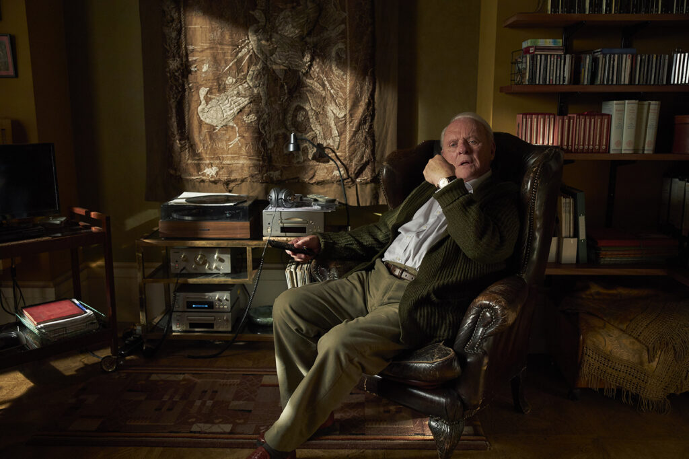

The Father: A Masterclass in Portraying Dementia and Family Struggles
Autor: Chat GPT
Fecha: 07/11/2023
"The Father" is a poignant and emotionally stirring film that navigates the complexities of dementia through the eyes of Anthony, played impeccably by the legendary Anthony Hopkins.
The story is a powerful exploration of the devastating impact of dementia on both the individual experiencing it and their family. Anthony Hopkins delivers an astounding performance, showcasing the raw vulnerability and confusion of a man grappling with the gradual loss of his reality.
The supporting cast, especially Olivia Colman as Anthony's daughter, offers an equally compelling portrayal, capturing the heart-wrenching struggles of a family trying to cope with the challenges and changes brought about by the illness.
Director Florian Zeller's approach to storytelling, utilizing shifting perspectives and a non-linear narrative, provides an immersive experience, offering glimpses into the disorienting world of someone with dementia.
The film's set design and cinematography cleverly contribute to the audience's understanding of the disarray and distortion of Anthony's world, reflecting his mental state with remarkable precision.
"The Father" is an emotionally intense and thought-provoking cinematic journey, leaving a lasting impact on its viewers through its powerful performances and storytelling.
This compelling and evocative film is a testament to the human condition, emphasizing the importance of empathy, understanding, and the unwavering love of family in the face of a challenging illness.